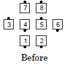
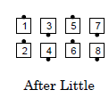
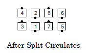
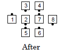

Plenty
From 1/4 Tag or 3/4 Tag: This call has 3 parts:
-
Little
-
Split Circulate 2
(formerly called "Turn the Star ½")
-
Ends Counter Rotate 1/4
and Roll while the centers
½ Zoom to form a wave




Ends in quarter tag.
Notes:
- The caller can vary the number of Split Circulates (e.g., "Plenty,
do 3 Split Circulates", "Plenty, but Split Circulate 3").
- From Diamonds, if you want the points to go as they are, the proper
usage is "Plenty, points go as you are". The command "Plenty" would
start with the points doing a 1/4 Right.
- Since the first part is a Little, the outside dancers normally begin with
a Quarter Right but the caller can tell them to quarter in a different
direction (e.g., "Plenty, outsides face in", "Left Plenty" (the outsides
quarter left), "Right Plenty" (the outsides quarter right).
© Copyright 1983, 1986-1988, 1995-2017 Bill Davis, John Sybalsky and
CALLERLAB Inc.,
The International Association of Square Dance Callers.
Permission to reprint, republish, and create derivative works
without royalty is hereby granted, provided this notice appears.
Publication on the Internet of derivative works without royalty is
hereby granted provided this notice appears. Permission to quote
parts or all of this document without royalty is hereby granted,
provided this notice is included. Information contained herein shall
not be changed nor revised in any derivation or publication.